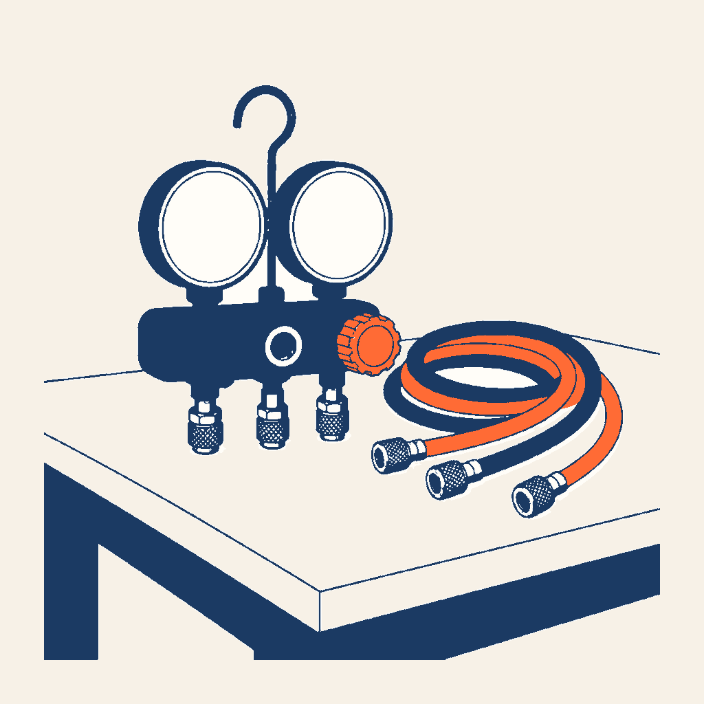
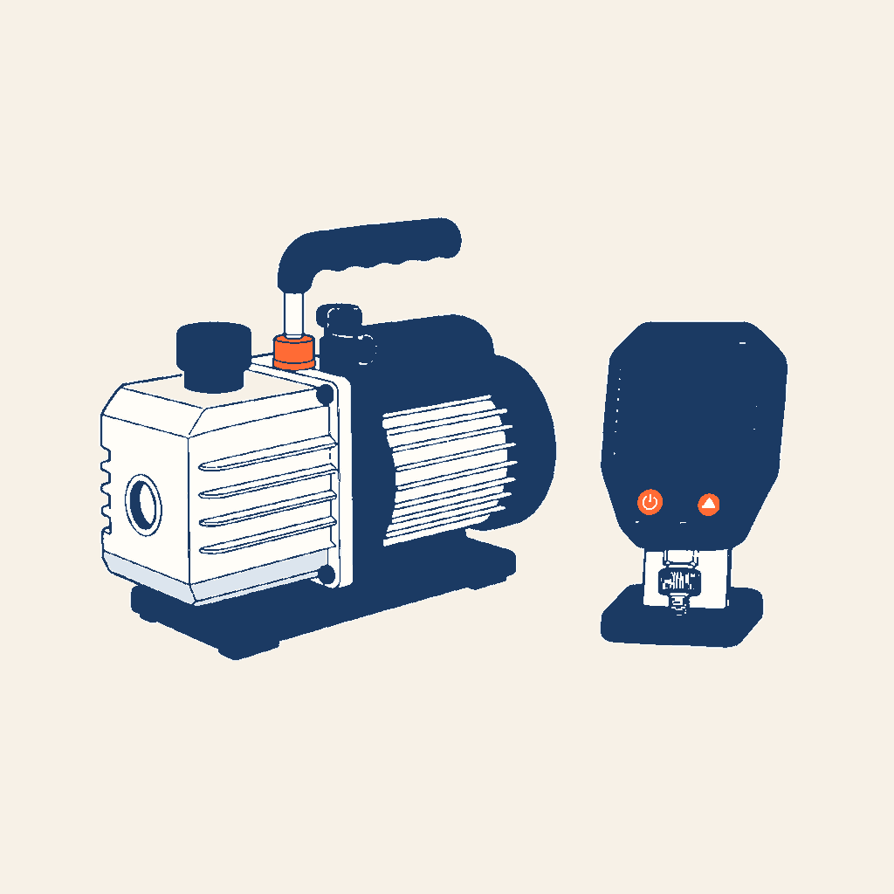
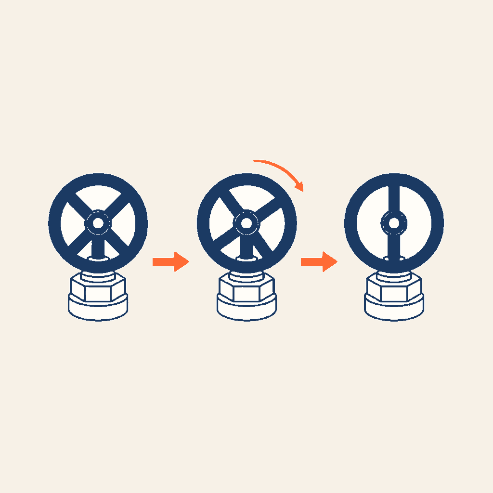

0,95×
HABILITATION FLUIDES · FICHES P1 + P3 + P5
La chaîne
de l’intervention
Manifold, tirage au vide et ordre des vannes dans un seul fil. À chaque étape, vous voyez le geste juste — et la conséquence d’un ordre dangereux.
25 écrans · 5 codes distincts · 5 contrôles



Préparation au geste : ce parcours donne l’ordre et les points de contrôle. Les valeurs cibles, les durées et la procédure de l’appareil restent celles de la notice, du fluide et du plateau.